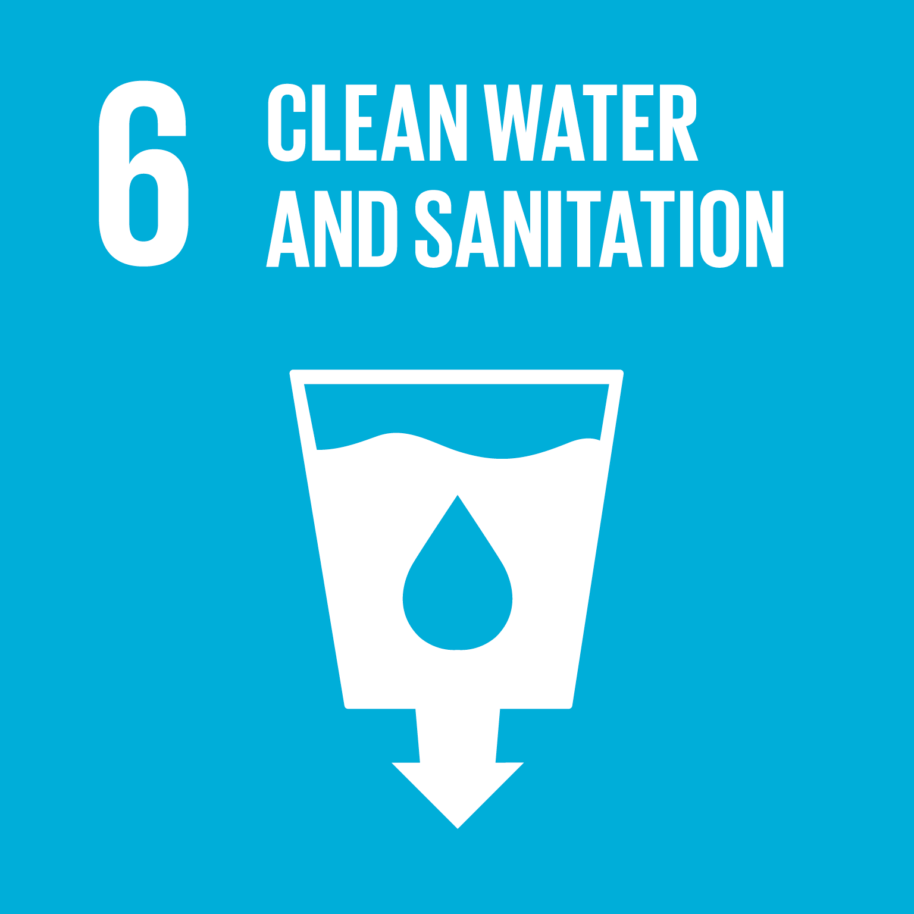
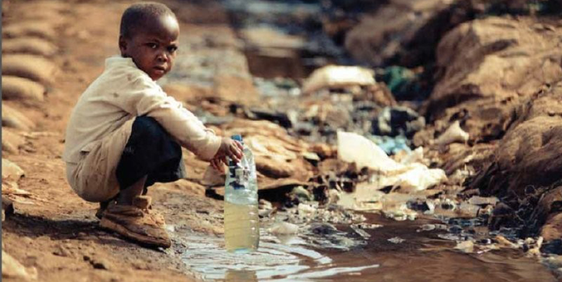

Due to a weak economy or infrastructure, millions of people worldwide suffer due to a lack of access to safely managed drinking water services
Fortunately, great progress has been made to further the advancemnets of sanitation and clean water services, in that over 90% of the world has access to safely managed drinking water services
To improve levels of sanitation and access to safely managed drinking water services, a larger amount of money must be invested into the mangement of freshwater ecosystems, as well as sanitation facilities in developing countries such as Ethiopia
SDG 6.1
By 2030, the United Nations hopes to achieve universal and equitable access to safe and affordable drinking water for all
This would mean that 100% of the wolrd has access to sage and affordable drinking water services
One possible solution to help acheive the goal would be to educate the citizens in developing countries about filtering methods to convert dirty water into water that can be drank

The African Water Crisis
Developing Countries in Africa suffer a lack of access to drinking water services at a disproportionate rate because of their weak eonomy and infrastructure
115 people in Africa die every hour from diseases linked to poor sanitation, poor hygiene and contaminated water
By educating citizens in developing countries about the various methods of filtering water, they would be able to become more self-sustaining instead of relying on others for their own survival
Another way to help people struggling with a lack of access to safely mangaed drinking water services would be to donate to organizations and charities who focus on this this problem

How Much of the World Does Not Have Access to Clean Water and Sanitation?
3 in 10 people around the world don't have access to safely managed drinking water services
Females are responsible 80% of the time for collecting water when there is no water on the premises
Around 2.4 billion people around the world lack access to toilets and other basic sanitation services
Almost 1,000 children die ever day due to diarrheal diseases which are related to sanitation and could be easily prevented
The scarcity of water affects more than 40% of the people around the world and is projected to rise even more in the future